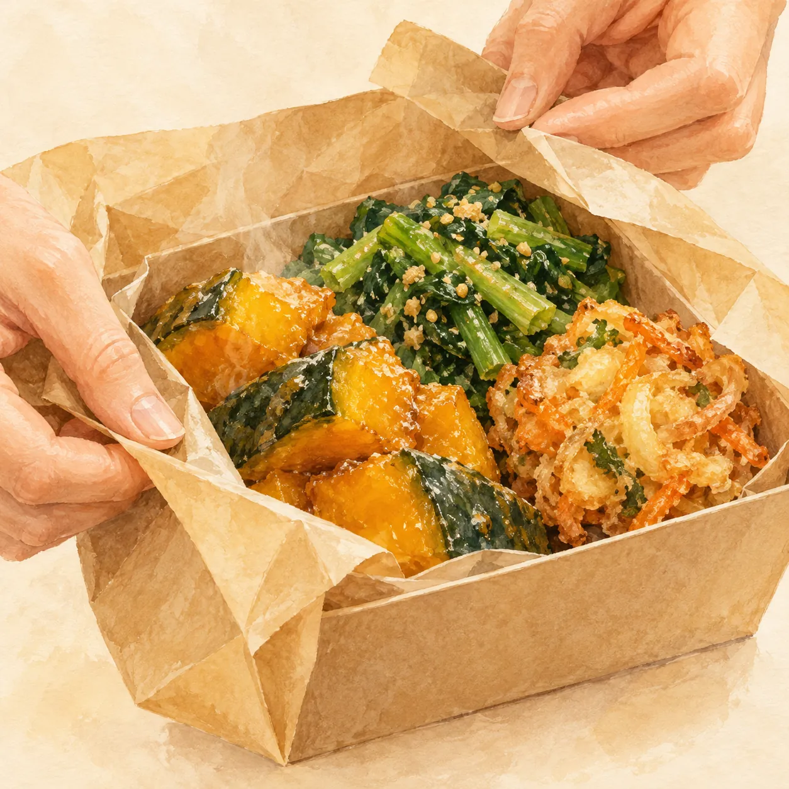
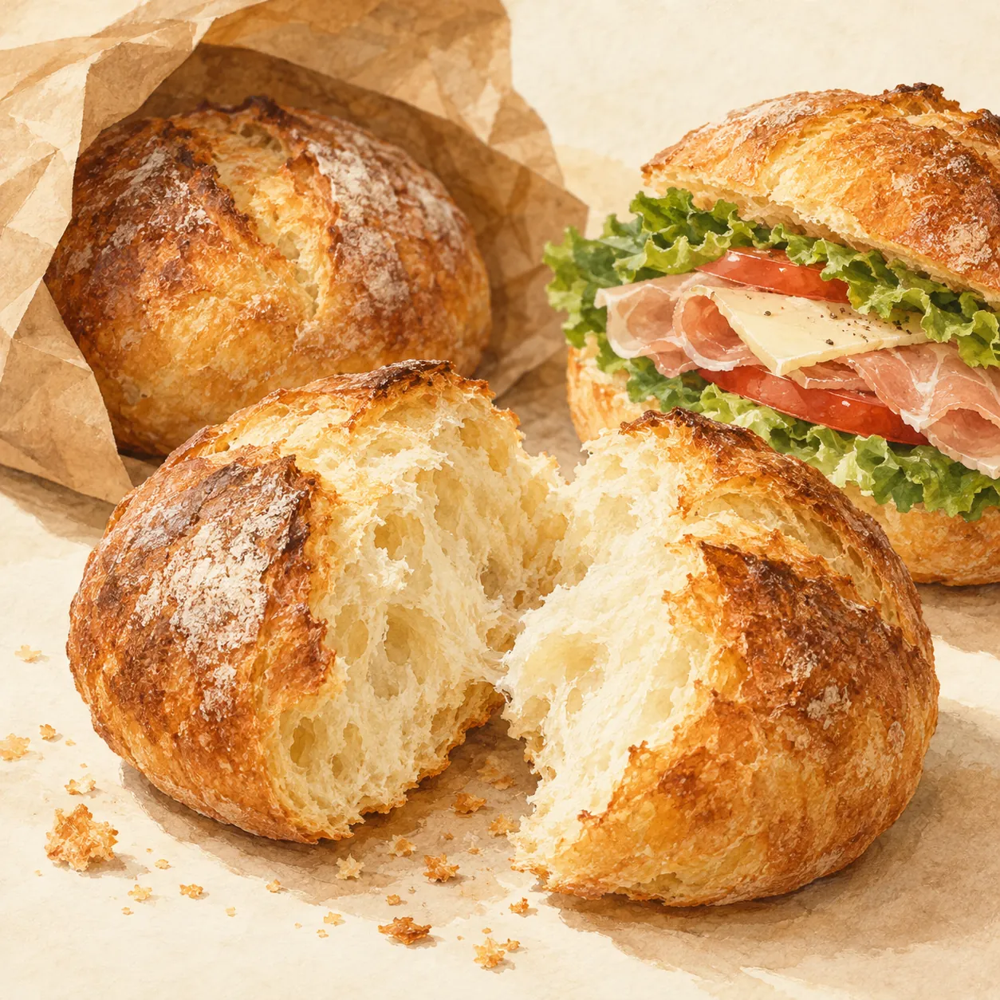
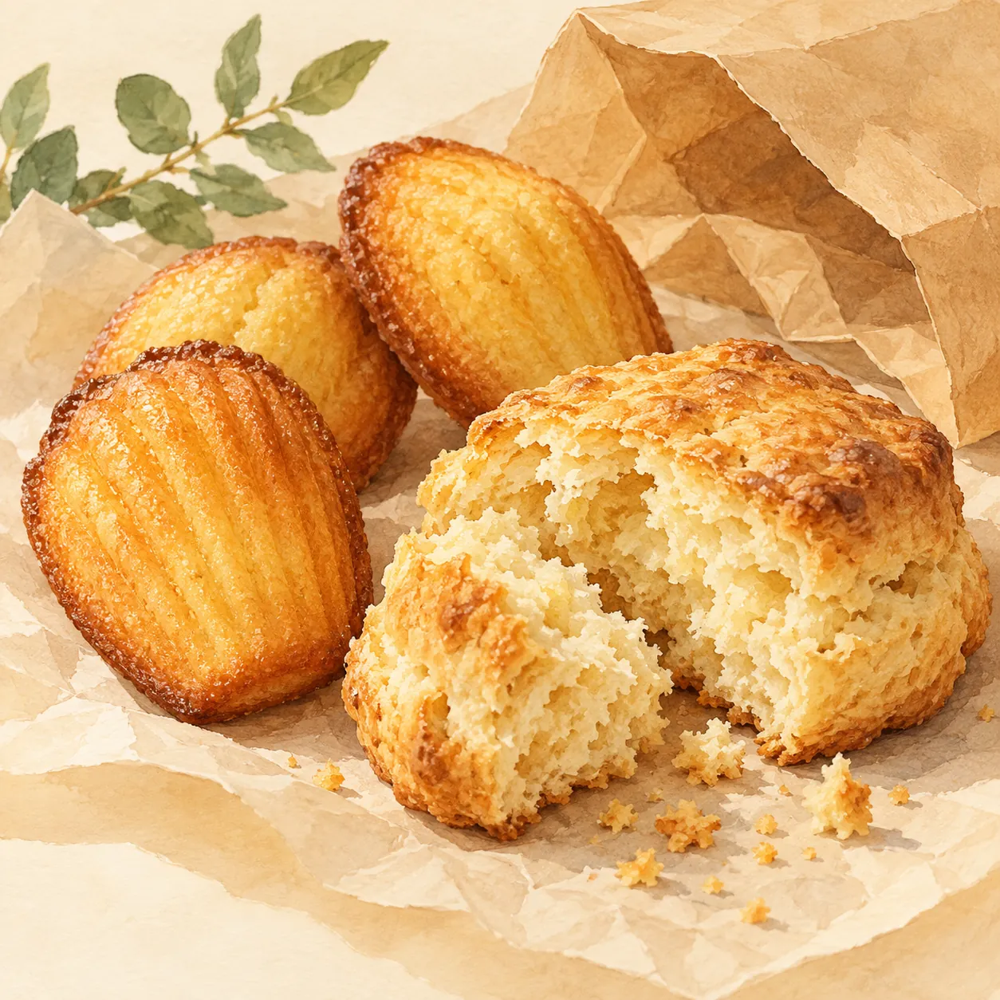
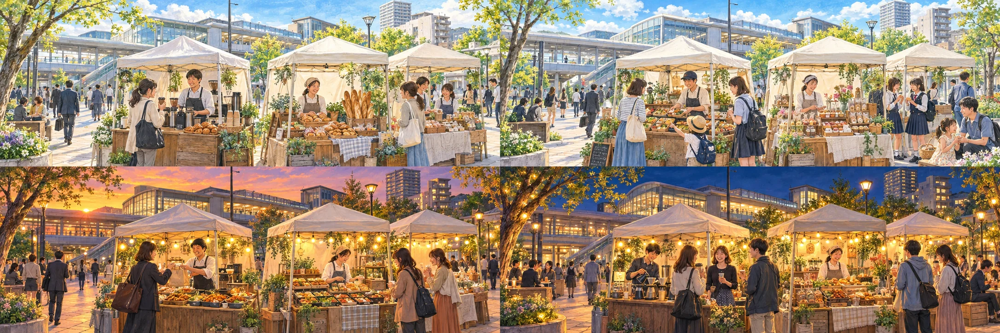

南草津駅に、おいしい寄り道を。
いつもの帰り道が、少し好きになる。
今夜のおかずも、授業帰りのおやつも。
小さな市を、駅前で準備中です。
開催決定2026年・21日間・西口と東口で
11.30月→12.20日
開催まで あと—日

帰り道の、小さな楽しみ。きょうは、何を
持って帰ろう？
完成イメージ（合成）｜区画・店数は調整中
- 1食べたいものを
3つまで選ぶ - 2出店するお店に
届く - 330件で
結果を公開みんなの結果と
比べられる
お知らせ以外には使いません。プライバシーポリシー
南草津駅周辺まちづくりの社会実験
（実施：UDCみなくさ・立命館大学）
帰り道に、持って帰りたい。
今夜のおかず。明日のパン。
ちょっといい、おやつ。



イラストはイメージです。販売する商品・価格は未定です。
EVENT OVERVIEW
どんな市？
ふだんは通り過ぎるだけの南草津駅に、帰り道に寄れる小さなお店が並びます。持ち帰りのほか、西口ではその場で食べられる飲食スペースも設ける予定です。南草津駅周辺のまちづくりの社会実験として、11月30日（月）〜12月20日（日）の3週間開きます。
- イベント
- 南草津駅前、よりみち。
- 日時
- 11月30日（月）〜12月20日（日）の3週間 平日の夕方と土日祝に開く予定（時間は決まりしだいお知らせします）
- 会場
- JR南草津駅西口・東口の駅前（駅の構内では開きません）
- 並ぶもの
- おかず・パン・おやつ・軽食など（予定）
- 食べる場所
- 持ち帰りのほか、西口に飲食スペース（予定）
- 入場料
- 無料
- 実施
- UDCみなくさ・立命館大学出店者の募集・調整：BRIDGE CYCLE株式会社
出店を検討中のお店
お店から掲載の許可をいただいた商品だけを載せています。
写真はお店から提供いただいたものです。価格は税込で、当日変わることがあります。
自分の帰り道も、想像してみよう。
あなたなら、
どのよりみち？
仕事帰りに一品。学校帰りに、ひと息。
絵を選ぶと、帰り道に合わせた楽しみ方が見られます。
有効回答が30件集まったら、みんなの結果を公開します。投票すると、みんなの結果と自分の1票を比べられます。
絵はイメージのイラストです。並ぶお店や商品は、出店者が決まりしだい、了承を得た写真・商品名・価格でお知らせします。
30秒で、いっしょにつくる。
帰り道に、何が買えたらうれしい？
名前もメールも不要。駅前で食べたいものを教えてください。投票して、みんなが何を食べたいか見てみよう。投票結果は出店するお店のメニュー選びに活用します。
みんなの「食べたい」投票
1票、届きました。
ありがとうございます。 有効回答が30件集まったら、みんなの結果を公開します。みんなは何を選んだ？ あなたの1票と比べてみましょう。
みんなの投票結果
送信や投稿はご自身で選べます。勝手に友だちへ送ることはありません。
開催案内（投票の結果と出店するお店）を、メールで受け取りませんか。
よりみちの、つづきを受け取ろう。
出店するお店を、
メールでお知らせ。
メールアドレスだけで登録できます。お知らせ以外には使いません。
- 出店するお店と、開催前のお知らせ
- 食べたいもの投票の結果
VENDORS
出会えるお店
出店するお店は、いま準備しています。決まったお店から、ここでご紹介します。

イメージ（イラスト）FOOD
食べもの
今夜のおかず、明日のパン、帰り道のおやつ。持ち帰りはもちろん、西口ではその場で食べられる飲食スペースも設ける予定です。
出店者紹介は、決まり次第お知らせします。
出店者の一覧
お店から掲載の許可をいただいたものだけを載せます。番号は掲載の順番で、売り場の番号ではありません。
PLAY
にぎわい
食べもののほかに、学生の企画、地域の団体、子ども向けの体験なども検討しています。決まりしだいお知らせします。
MAP
会場の場所
駅のどのあたり？（位置関係の図を見る）
ACCESS
アクセス
- 電車JR琵琶湖線「南草津駅」の西口・東口（駅の外）
- 京都駅からJRで約20分
- 立命館大学BKCからバスで南草津駅まで約20分
- お問い合わせinfo@bridgecycleco.com
所要時間は目安です（立命館大学の交通案内より）。
日程も、お店も、決まったことから。
いま、準備していること。
決まっていること
- 南草津駅周辺まちづくりの社会実験として行います
- 会期は11月30日（月）〜12月20日（日）の3週間。平日も土日祝も開く予定です
- 場所は西口・東口の駅前です（駅の構内では開きません）
- 出店するお店の募集に向けて、企画を準備しています
まだ決まっていないこと
- 開く時間と、西口・東口それぞれの区画（このページの時間はすべて案です）
- 出店するお店と、買えるもの
お店の紹介は準備中です。了承を得た写真・商品名・価格から、順にお知らせします。
決まったものから、このページと開催案内でお知らせします。
お店をやっている方・出店に関心のある方へ出店の条件は、出店者向けのページでご案内しています。出店者向けのページへ
これは、駅前の「使い方」を試す実験です。
ふだんは通り過ぎるだけの駅前を、寄り道したくなる場所にできるか。南草津駅周辺のまちづくりの一つとして、11月30日（月）〜12月20日（日）の3週間で試します。
みなさんの投票と、お店の売れ行きは、個人やお店が分からない形で集計し、これからの駅前の使い方を考える材料にします。
| 実施 | 一般社団法人アーバンデザインセンターみなくさ（UDCみなくさ）、立命館大学 |
|---|---|
| 募集・調整 | BRIDGE CYCLE株式会社（大津市） |
| 問い合わせ | info@bridgecycleco.com 電話は平日10〜17時：080-5309-9770 |